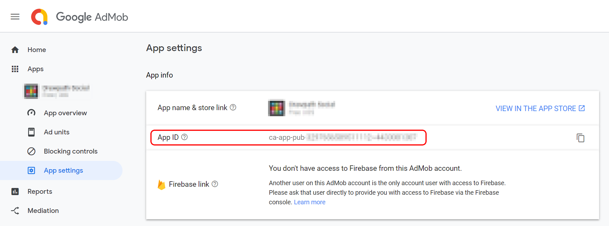
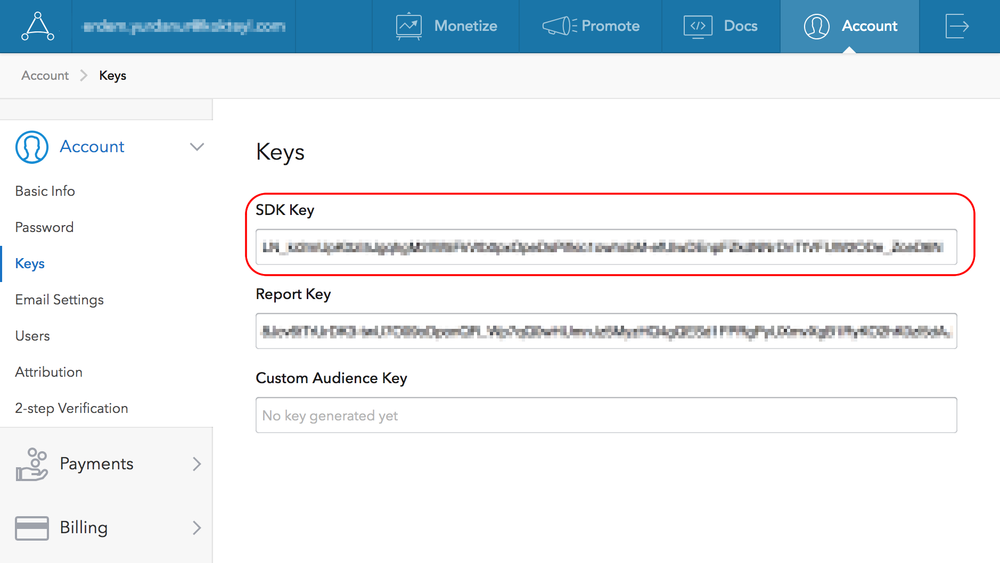
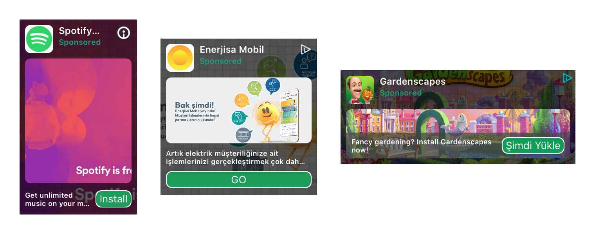
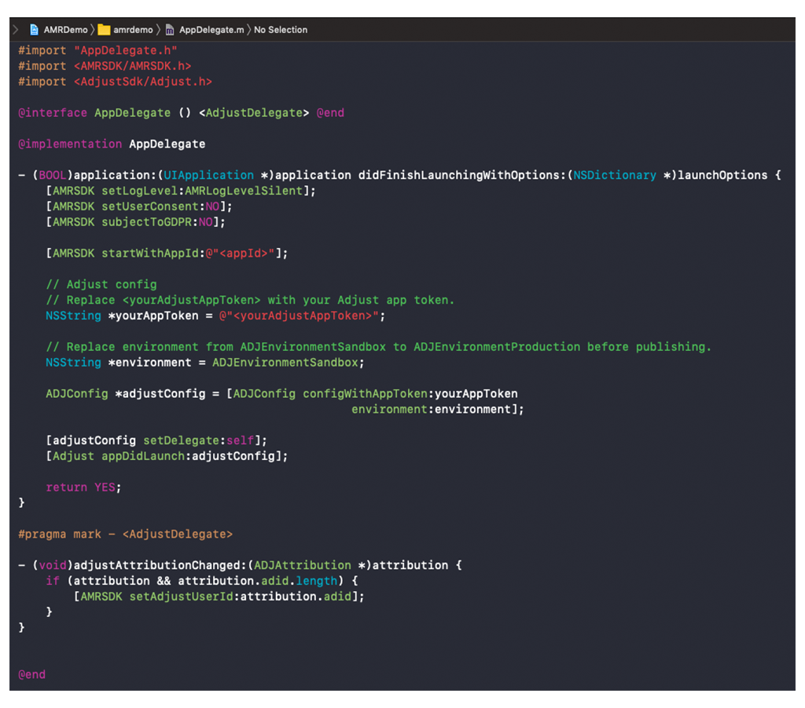
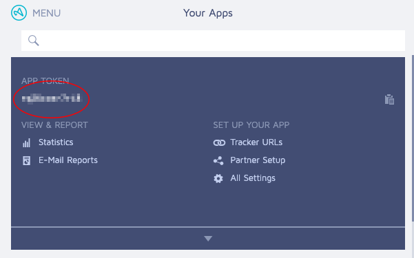

Prerequisites
- iOS 8 or later.
- Xcode 10.2.1 or later.
- Application Id provided in Admost Mediation Dashboard.
- Zone Id(s) provided in Admost Mediation Dashboard.
For testing you can use following Ids;
Application Id: @"15066ddc-9c18-492c-8185-bea7e4c7f88c"
Banner Zone Id: @"b4009772-de04-42c4-bbaa-c18da9e4a1ab"
Interstitial Zone Id: @"39f74377-5682-436a-9338-9d1c4df410bd"
RewardedVideo Zone Id: @"2bdefd44-5269-4cbc-b93a-373b74a2f067"
Offerwall Zone Id: @"1cadca08-33f9-4da7-969e-ef116d4e7d0e"
Setup
You can install AMR SDK and mediation adapters using CocoaPods (recommended) or add AMR SDK framework files and mediation adapters files manually to your project.
Installation With CocoaPods
CocoaPods is a dependency manager for Swift and Objective-C Cocoa projects which automates and simplifies the process of using 3rd-party libraries like AMR in your projects. See getting started guide for more information on installing cocoapods.
Create your podfile and install
At least one mediation adapter is required for AMRSDK to show banners. You can add all adapters (recommended for maximized revenue) or start with a subset of adapters. Consult your AMR agent for further details.
Please click + icon to add to list and - to remove from list.
Podfile will be updated while you are choosing networks.
To integrate AMR SDK and mediation adapters into your Xcode project using CocoaPods, specify it in
your Podfile:
Then, run the following command:
$ pod installAfter you complete pod installation you can skip to Xcode Setup step.
Manual Installation
Make sure $(PROJECT_DIR) recursive is set in your target's Framework Search
Paths in Build Settings.
Add -ObjC and -lc++ flags in your target's Other Linker Flags
in Build Settings.
AMR Framework Files
Drag and drop following files in AMRDemo/AMR/Core folder to your project.
-
AMRDemo/AMR/Core
- AMRSDK.framework
- AMRResources.bundle
- KKLog.framework
Other Frameworks and Libraries
Add following frameworks and libraries to your project.
- AddressBook.framework
- AdSupport.framework
- AudioToolbox.framework
- AVFoundation.framework
- AVKit.framework
- CFNetwork.framework
- CoreGraphics.framework
- CoreLocation.framework
- CoreMedia.framework
- CoreMotion.framework
- CoreTelephony.framework
- EventKit.framework
- EventKitUI.framework
- ImageIO.framework
- Foundation.framework
- JavaScriptCore.framework
- libsqlite3.tbd
- libxml2.tbd
- libz.tbd
- MediaPlayer.framework
- MessageUI.framework
- MobileCoreServices.framework
- QuartzCore.framework
- SafariServices.framework
- Social.framework
- StoreKit.framework
- SystemConfiguration.framework
- UIKit.framework
- WatchConnectivity.framework
- WebKit.framework
Mediation Adapters
At least one mediation adapter is required for AMRSDK to show banners. You can add all adapters (recommended for maximized revenue) or start with a subset of adapters. Consult your AMR agent for further details.
Create a folder called Mediation Adapters (name is optonal) and add adapters in AMRDemo/AMR/MediationAdapters folder.
-
AMRDemo/AMR/MediationAdapters
- AMRAdapterAdcolony
- AMRAdapterAdmob
- AMRAdapterAdmost
- AMRAdapterAdtiming
- AMRAdapterAmazon
- AMRAdapterApplovin ~ iOS9+
- AMRAdapterAppnext
- AMRAdapterAppsamurai
- AMRAdapterChartboost
- AMRAdapterDFP
- AMRAdapterFacebook ~ iOS9+
- AMRAdapterFyber
- AMRAdapterInmobi
- AMRAdapterInneractive
- AMRAdapterIronsource
- AMRAdapterMintegral
- AMRAdapterMobfox ~ iOS9+
- AMRAdapterMopub
- AMRAdapterMytarget
- AMRAdapterNexage
- AMRAdapterPollfish ~ iOS9+
- AMRAdapterSmaato
- AMRAdapterStartapp
- AMRAdapterTapjoy
- AMRAdapterTapResearch
- AMRAdapterUnity
- AMRAdapterVungle
- AMRAdapterYouappi ~ iOS9+
Xcode Setup
Add following lines to your plist file.
<key>NSAppTransportSecurity</key>
<dict>
<key>NSAllowsArbitraryLoads</key>
<true/>
</dict><key>NSCalendarsUsageDescription</key>
<string>Some ad content may access calendar</string>Important If you are using AdMob you must add your AdMob App ID to your plist file with GADApplicationIdentifier key as shown below.
(Replace ca-app-pub-XXXXXXXXXXXXXXXX~XXXXXXXXXX with your own App ID)
<key>GADApplicationIdentifier</key>
<string>ca-app-pub-XXXXXXXXXXXXXXXX~XXXXXXXXXX</string>
Your App ID can be found on AdMob dashboard -> Apps -> App settings -> App info.

Important If you are using AppLovin you must add AppLovin SDK Key to your plist file with AppLovinSdkKey key as shown below.
(Replace XXXXXXXXXXXXXXX with your own AppLovin SDK Key)
<key>AppLovinSdkKey</key>
<string>XXXXXXXXXXXXXXX</string>
Your AppLovin SDK Key can be found on AppLovin Dashboard -> Account -> Keys.

Usage
Initialization
To initialize Admost Mediation SDK, import AMRSDK.h to your AppDelegate
file;
#import <AMRSDK/AMRSDK.h>and initialize AMRSDK with your Application Id in didFinishLaunchingWithOptions
callback;
- (BOOL)application:(UIApplication *)application
didFinishLaunchingWithOptions:(NSDictionary *)launchOptions {
//GDPR COMPLIANCE
[AMRSDK setUserConsent:YES];
[AMRSDK subjectToGDPR:YES];
[AMRSDK startWithAppId:@"<appId>"];
return YES;
}
For testing you can use following Application Id;
Application Id: @"15066ddc-9c18-492c-8185-bea7e4c7f88c"
GDPR
Once you have collected the user’s consent, you can pass it onto the SDK using the init configuration parameters shown above.
setUserConsent has a boolean parameter. If you have the user’s consent, set it YES. If you do not have the user's consent, set it NO.
subjectToGDPR has a boolean parameter. If you know the user is subject to GDPR, set it YES. If you know the user is not subject to GDPR, set it NO.
If you don’t pass the user’s consent or subjectToGDPR to the SDK, the rules described in GDPR have been applied.
Banner Ads
To create and show a banner ad first import AMRSDK.h to your
UIViewController file and declare an AMRBanner *mpuBanner property;
// ViewController.h
#import <AMRSDK/AMRSDK.h>
@interface ViewController : UIViewController <AMRBannerDelegate>
@property(nonatomic, strong) AMRBanner *mpuBanner;
@end
Initialize it with your Banner Zone Id and set it's
delegate to an object (generally your viewController) which conforms to <AMRBannerDelegate>
protocol.
// ViewController.m
mpuBanner = [AMRBanner bannerForZoneId:@"<zoneId>"];
mpuBanner.delegate = self;
For testing you can use following Banner Zone Id;
Banner Zone Id: @"b4009772-de04-42c4-bbaa-c18da9e4a1ab"
Optionally you can set the width of the banner, default value is screen width.
mpuBanner.bannerWidth = 300;Start loading banner with loadBanner method and wait for the
<AMRBannerDelegate> protocol callbacks.
[mpuBanner loadBanner];There are 2 callback methods in <AMRBannerDelegate> protocol.
When didReceiveBanner callback method is called just add banner's
bannerView as a subview on your viewcontroller to show banner.
- (void)didReceiveBanner:(AMRBanner *)banner {
[self.view addSubview:banner.bannerView];
}If didFailToReceiveBanner callback method is called investigate error to adress the
problem.
- (void)didFailToReceiveBanner:(AMRBanner *)banner error:(AMRError *)error {
NSLog(error.errorDescription);
}Customize Native Ad Appearance (Optional)
You can change the appearance of native ads to suit your application's design. If you are integration AMR with Cocoapods, download and extract CustomXibs.zip in AMRSDK pod to your project. If you are manually integrating AMR add AMRDemo/Supporting Files/Assets/Natives/ folder to your project.
You can change the layout and design of following assets;

If you want to use your own layouts you can create a copy and modify one of the custom sized samples (CustomNative150x250.xib, CustomNative200x200.xib or CustomNative300x120.xib) and change their frame to fit your design.
To use your own custom native xibs you have set the name and size of the custom xib explicitly as follows;
_bannerCustom200x200 = [AMRBanner bannerForZoneId:@"c72a4a52-23c5-4c34-9eb1-7bbc4c08c7e4"];
_bannerCustom200x200.delegate = self;
_bannerCustom200x200.customNativeSize = CGSizeMake(200, 200);
_bannerCustom200x200.customeNativeXibName = @"CustomNative200x200";
[_bannerCustom200x200 loadBanner];
Interstitial Ads
To create and show an interstitial ad first import AMRSDK.h to your UIViewController
file and declare an AMRInterstitial *fullScreen property;
// ViewController.h
#import <AMRSDK/AMRSDK.h>
@interface ViewController : UIViewController <AMRInterstitialDelegate>
@property(nonatomic, strong) AMRInterstitial *fullScreen;
@end
Initialize it with your Interstitial Zone Id and
set it's
delegate to an object (generally your viewController) which conforms to
<AMRInterstitialDelegate> protocol.
// ViewController.m
fullScreen = [AMRInterstitial interstitialForZoneId:@"<zoneId>"];
fullScreen.delegate = self;
[fullScreen loadInterstitial];
For testing you can use following Interstitial Zone Id;
Interstitial Zone Id: @"39f74377-5682-436a-9338-9d1c4df410bd"
There are 5 callback methods in <AMRInterstitialDelegate> protocol.
When didReceiveInterstitial callback method is called just call the showFromViewController
method to present interstitial from a viewController.
- (void)didReceiveInterstitial:(AMRInterstitial *)interstitial {
[interstitial showFromViewController:self];
}If didFailToReceiveInterstitial callback method is called investigate error
to adress the problem.
Important Attempting to load a new interstitial from the
didFailToReceiveInterstitial
methods is strongly discouraged.
- (void)didFailToReceiveInterstitial:(AMRInterstitial *)interstitial error:(AMRError *)error {
NSLog(error.errorDescription);
}didShowInterstitial callback method is called to inform the application that the received interstital is shown.
- (void)didShowInterstitial:(AMRInterstitial *)interstitial {}didFailToShowInterstitial callback method is called to inform the application that the received interstitial failed to be shown.
This delegate expected to be called very rarely but if it is called you should either load another interstitial or resume tasks.
- (void)didFailToShowInterstitial:(AMRInterstitial *)interstitial error:(AMRError *)error {}
didDismissInterstitial callback method is called to inform the application that the
interstitial is closed by clicking cross button/back button. You can use this callback to resume paused tasks during
interstitial presentation.
You can use didDismissInterstitial callback and reload a interstitial ad.
- (void)didDismissInterstitial:(AMRInterstitial *)interstitial {}Rewarded Video Ads
Rewarded video ads' integration is pretty similar to Interstitial ads with 2 additional callbacks. To create and show a rewarded video ad
first import
AMRSDK.h to your UIViewController file and declare an AMRRewardedVideo *rewardedVideo property;
// ViewController.h
#import <AMRSDK/AMRSDK.h>
@interface ViewController : UIViewController <AMRRewardedVideoDelegate>
@property(nonatomic, strong) AMRRewardedVideo *rewardedVideo;
@end
Initialize it with your RewardedVideo Zone Id
and
set it's
delegate to an object (generally your viewController) which conforms to
<AMRRewardedVideoDelegate> protocol.
// ViewController.m
rewardedVideo = [AMRRewardedVideo rewardedVideoForZoneId:@"<zoneId>"];
rewardedVideo.delegate = self;
[rewardedVideo loadRewardedVideo];
For testing you can use following RewardedVideo Zone Id;
RewardedVideo Zone Id: @"2bdefd44-5269-4cbc-b93a-373b74a2f067"
There are 6 callback methods in <AMRRewardedVideoDelegate> protocol.
When didReceiveRewardedVideo callback method is called just call the showFromViewController
method to present rewarded video from a viewController.
- (void)didReceiveRewardedVideo:(AMRRewardedVideo *)rewardedVideo {
[rewardedVideo showFromViewController:self];
}
If didFailToReceiveRewardedVideo callback method is called investigate
error
to adress the problem.
Important Attempting to load a new rewarded video from the
didFailToReceiveRewardedVideo
methods is strongly discouraged.
- (void)didFailToReceiveRewardedVideo:(AMRRewardedVideo *)rewardedVideo error:(AMRError *)error {
NSLog(error.errorDescription);
}didShowRewardedVideo callback method is called to inform the application that the received rewarded video is shown.
- (void)didShowRewardedVideo:(AMRRewardedVideo *)rewardedVideo {} didFailToShowRewardedVideo callback method is called to inform the application that the received rewarded video failed to be shown.
This delegate expected to be called very rarely but if it is called you should either load another rewarded video or resume tasks.
- (void)didFailToShowRewardedVideo:(AMRRewardedVideo *)rewardedVideo error:(AMRError *)error {}
didCompleteRewardedVideo callback method is called to inform the application that the user completed watching the video to a certain point to get the reward. The video may have finished or keep playing after didCompleteRewardedVideo is called. Use this callback to reward the user.
Important Attempting to load a new rewarded video from the
didCompleteRewardedVideo
methods is strongly discouraged.
- (void)didCompleteRewardedVideo:(AMRRewardedVideo *)rewardedVideo {
[player reward];
}
didDismissRewardedVideo callback method is called to inform the application that the
rewarded video is closed by clicking cross button/back button. You can use this callback to resume paused tasks during
rewarded video presentation. Always called after didCompleteRewardedVideo delegate callback.
You can use didDismissRewardedVideo callback and reload a new rewarded video ad.
- (void)didDismissRewardedVideo:(AMRRewardedVideo *)rewardedVideo {
[animation resume];
}
Offerwall Ads
To create and show an offerwall ad first import AMRSDK.h to your UIViewController
file and declare an AMROfferWall *fullScreen property;
// ViewController.h
#import <AMRSDK/AMRSDK.h>
@interface ViewController : UIViewController <AMROfferWallDelegate>
@property(nonatomic, strong) AMROfferWall *fullScreen;
@end
Initialize it with your Offerwall Zone Id and
set it's
delegate to an object (generally your viewController) which conforms to
<AMROfferWallDelegate> protocol.
// ViewController.m
fullScreen = [AMROfferWall offerWallForZoneId:@"<zoneId>"];
fullScreen.delegate = self;
[fullScreen loadOfferWall];
For testing you can use following Offerwall Zone Id;
Offerwall Zone Id: @"1cadca08-33f9-4da7-969e-ef116d4e7d0e"
There are 5 callback methods in <AMROfferWallDelegate> protocol.
When didReceiveOfferWall callback method is called just call the showFromViewController
method to present offerwall from a viewController.
- (void)didReceiveOfferWall:(AMROfferWall *)offerwall {
[offerwall showFromViewController:self];
}If didFailToReceiveOfferWall callback method is called investigate error
to adress the problem.
- (void)didFailToReceiveOfferWall:(AMROfferWall *)offerwall error:(AMRError *)error {
NSLog(error.errorDescription);
}didShowOfferWall callback method is called to inform the application that the received offerwall is presented.
- (void)didShowOfferWall:(AMROfferWall *)offerwall {} didFailToShowOfferWall callback method is called to inform the application that the received offerwall failed to be presented.
This delegate expected to be called very rarely but if it is called you should either load another offerwall or resume tasks.
- (void)didFailToShowOfferWall:(AMROfferWall *)offerwall error:(AMRError *)error {}
didDismissOfferWall callback method is called to inform the application that the
offerwall is no longer present. You can use this callback to resume paused tasks during
offerwall presentation.
- (void)didDismissOfferWall:(AMROfferWall *)offerwall {} Spend Virtual Currency
// Spend Virtual Currency Callbacks - Optional
[AMRSDK setVirtualCurrencyDelegate:self];
[AMRSDK spendVirtualCurrency];
- (void)didSpendVirtualCurrency:(NSString *)currency
amount:(NSNumber *)amount
networkName:(NSString *)networkName {}
Extras
DFP/AdMob Mediation Integration
The AMR DFP Adapter lets publishers integrate Admost Mediation Router ads into applications with DFP or AdMob Mediation set as main ad mediation layer.
In order to show AMR ads in DFP/AdMob Mediation you should first follow dedicated steps of DFP or AdMob Mediation to set AMR as an ad mediation source.
After adding AMR as an ad mediation source you should define class names for banner and interstitial
ad custom events. Enter AMRDFPCustomEventBanner and
AMRDFPCustomEventInterstitial class names for
banner and interstitial class names respectively. You must pass your AMR zone Id to custom event via
Parameter field.


Include Admost DFP Adapter in your project after setup, if you are using CocoaPods add following line to ypur podfile and run the following command to install.
pod AMRAdapterDFP
$ pod install
If you are integration Admost manually add AMRAdapterDFP from AMRDemo/AMR/MediationAdapters
folder to your project.
Now you can show AMR banner and interstitial ads via DFP or AdMob Mediation.
You can check DFP banner and interstitial example in demo project; AMRDemo/DFPCustomEvents/DFPCustomEventsViewController.m
Test Suite
You can use Test Suite to test your ad networks with your zone ids.
You must be a Tester to show Test Suite on devices.
To use Test Suite in your application, you can use one of the following codes;
[AMRSDK startTestSuiteWithAppId:<appId>];
[AMRSDK startTestSuiteWithZones:@[<zoneIds>]];

In App Purchase Tracking
The following method is used to track purchases with receipt validation:
[AMRSDK trackPurchase:<transactionId>
currencyCode:<currencyCode>
amount:<amount>];
Explanation of Parameters:
- transactionId – Transaction identifier of SKPaymentTransaction.
- currencyCode – Currency code of transaction.
- amount – Amount of transaction.
Example code for in app purchase tracking:
SKProduct *product = ...;
NSLocale *priceLocale = product.priceLocale;
NSString *currencyCode = [priceLocale objectForKey:NSLocaleCurrencyCode];
[AMRSDK trackPurchase:transaction.transactionIdentifier
currencyCode:currencyCode
amount:[product.price doubleValue]];
Preloading Banners
You can use cacheBanner method to cache your banners before showing them.
In order to cache banners use following code;
AMRBanner* banner = [AMRBanner bannerForZoneId:@"<zoneId>"];
banner.bannerWidth = 320;
[banner cacheBanner];
Setting Application User Id
You can use the following method to set application specific user id in Admost Analytics for enhanced tracking of your users. You should to call this method before initialization.
[AMRSDK setUserId:@"<applicationUserId>"];
Setting Adjust User Id
You can use the following method to set Adjust user id in Admost Analytics for enhanced tracking of your users.
[AMRSDK setAdjustUserId:@"<adjustUserId>"];
Adjust Integration New
Follow the official ADJUST documents to integrate AdjustSDK in to your app.
#import <AMRSDK/AMRSDK.h>
#import <AdjustSdk/Adjust.h>
@interface AppDelegate () <AdjustDelegate> @end
- (BOOL)application:(UIApplication *)application
didFinishLaunchingWithOptions:(NSDictionary *)launchOptions {
[AMRSDK startWithAppId:@"<appId>"];
.
.
// Adjust Integration
// Replace <yourAdjustAppToken> with your Adjust app token.
NSString *yourAppToken = @"<yourAdjustAppToken>"
// Replace environment from ADJEnvironmentSandbox to ADJEnvironmentProduction before publishing.
NSString *environment = ADJEnvironmentSandbox;
ADJConfig *adjustConfig = [ADJConfig configWithAppToken:yourAppToken
environment:environment];
[adjustConfig setDelegate:self];
[Adjust appDidLaunch:adjustConfig];
.
.
return YES;
}
#pragma mark - <AdjustDelegate>
- (void)adjustAttributionChanged:(ADJAttribution *)attribution {
// Send adid value to Admost
if (attribution && attribution.adid.length) {
[AMRSDK setAdjustUserId:attribution.adid];
}
}

Important
Replace environment from <ADJEnvironmentSandbox> to <ADJEnvironmentProduction>
before publishing.
Important
Replace <yourAdjustAppToken> with your own Adjust app token. You can find this in your Adjust dashboard.
Your Adjust app token can be found on Adjust Dashboard -> Apps -> App Detail.

Server to Server Callbacks
For rewarded video ads, you can use Server to Server Callbacks for rewarding users after successful completion of video ads. Please consult your business contact person for enabling it and setting required parameters like callback URL, request verification token and method.
To use this feature, only requirement on application side is setting your application user id as described here. You may also add new custom parameters to the callback URL by setting custom data to the rewarded video object AMRRewardedVideo as shown in the sample code below. This method has to be called before showing ad.
rewardedVideo.customData = @{
@"ip": @"127.0.0.1",
@"os": @"12.0.1"
};